Chapter 13 The Average Causal Effect on the Treated Units and Other Estimands
Chapters 10–12 focused on the identification and estimation of the average causal effect
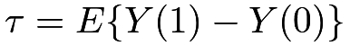
under the ignorability and overlap assumptions. Conceptually, it is straightforward to extend the discussion to the average causal effects on the treated and control units: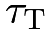 |
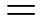 |
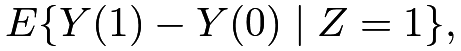 |
||
 |
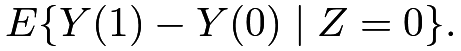 |
If  and
and
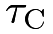
differ from , then the average causal effects are heterogeneous across the treatment and control groups. Whether we should estimate , or depends on the practical question of interest.
, then the average causal effects are heterogeneous across the treatment and control groups. Whether we should estimate , or depends on the practical question of interest.
Because of the symmetry, this chapter focuses on . Chapter 70 also discusses extensions to other estimands.
67 Nonparametric identification of
The average causal effect on the treated units equals
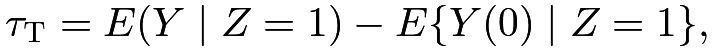 |
where the first term
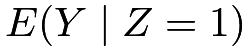
is directly identifiable from the data and the second term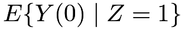
is counterfactual. The key assumption to identify the second term is the following ignorability and overlap assumptions.Assumption 13.1
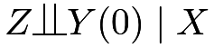
and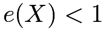
.Because the key is to identify , we only need the “one-sided” ignorability and overlap assumptions. Under Assumption 13.1, we have the following identification result for .
Theorem 13.1
Under Assumption 13.1, we have
 |
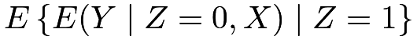 |
|||
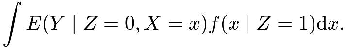 |
By Theorem 13.1 the counterfactual mean equals the conditional mean of the observed outcomes under the control, averaged over the distribution of the covariates under the treatment.
It implies that is nonparametrically identified by
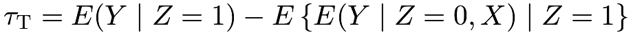 |
(70) |
Proof of Theorem 13.1: We have
|
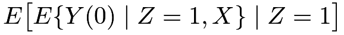 |
|||
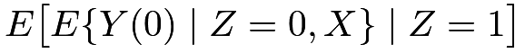 |
||||
With a discrete
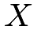
, the identification formula in Theorem 13.1 reduces to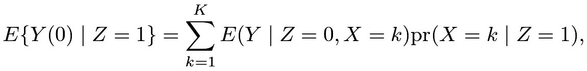 |
motivating the following stratified estimator for :
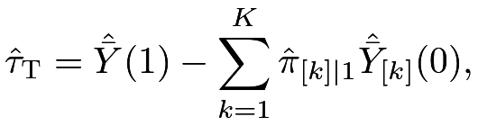 |
where
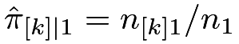
is the proportion of category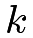
of among the treated units.For continuous , we need to fit an outcome model for
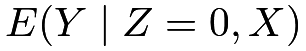
using the control units. If the fitted values for the control potential outcomes are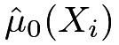
, then the outcome regression estimator is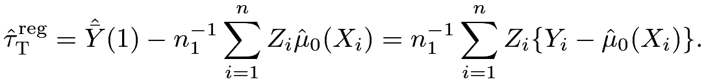 |
Example 13.1
If we specify a linear model for all units
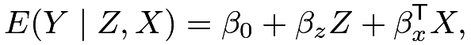 |
then
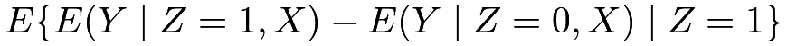 |
||||
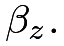 |
If we run OLS to obtain 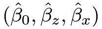 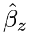.
Section 56.2 shows that is an estimator for , and this example further shows that is an estimator for . This is not surprising because the linear model assumes constant causal effects across units.
Example 13.2
The identification formula depends only on , so we need only to specify a model for the control units. When this model is linear,
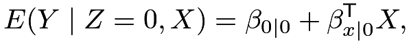 |
we have
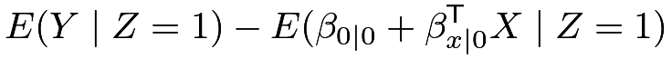 |
||||
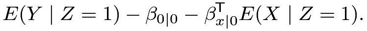 |
If we run OLS with only the control units to obtain 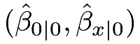
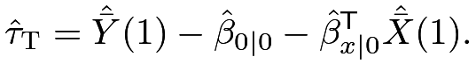 |
Using the property of the OLS (see 162), we have
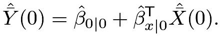 |
Therefore, the above estimator reduces to
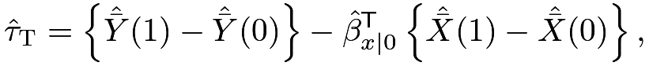 |
which is similar to () with a different coefficient for the difference in means of the covariates.
As an algebraic fact, we can show that this estimator equals the coefficient of 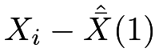 in the OLS fit of the outcome on the treatment, covariates, and their interactions, with the covariates centered as
in the OLS fit of the outcome on the treatment, covariates, and their interactions, with the covariates centered as
68 Inverse propensity score weighting and doubly robust estimation of
Theorem 13.2
Under Assumption 13.1, we have
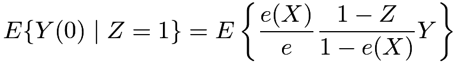 |
(71) |
and
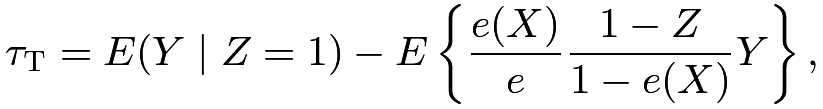 |
(72) |
where 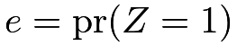
Proof of Theorem 13.2: The left-hand side of (71) equals
|
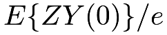 |
|||
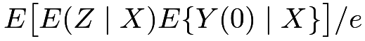 |
||||
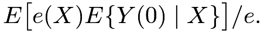 |
The right-hand side of (71) equals
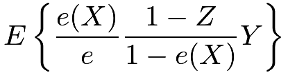 |
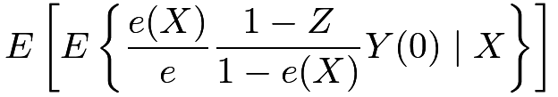 |
|||
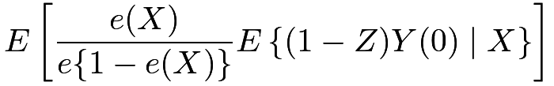 |
||||
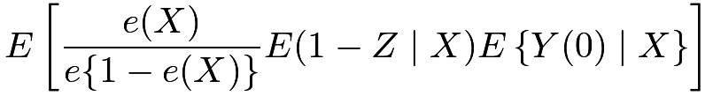 |
||||
So (71) holds.
We have two IPW estimators
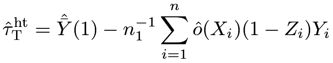 |
and
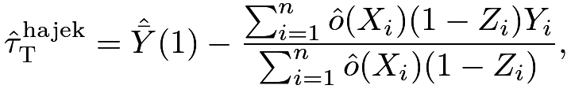 |
where
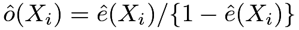
is the fitted odds of the treatment given covariates.We also have a doubly robust estimator for which combines the propensity score and the outcome models. Define
| (73) |
where
Theorem 13.3
Under Assumption 13.1, if either or , then
Based on the population versions of in (73), we can obtain its sample version to construct a doubly robust estimator for .
Definition 13.1 (doubly robust estimator for )
Based on the data , we can obtain a doubly robust estimator for by the following steps:
-
[(1)]
- 1.
obtain the fitted values of the propensity scores and then obtain the fitted values of the odds ;
- 2.
obtain the fitted values of the outcome mean under control ;
- 3.
construct the doubly robust estimator: , where
By Definition 13.1, we can rewrite as
or
Similar to the discussion of , we can estimate the variance of via the bootstrap by resampling from .
Hahn, (1998), Mercatanti and Li, (2014), Shinozaki and Matsuyama, (2015) and Yang and Ding, 2018b () are references on the estimation of .
69 An example
The following R function implements two outcome regression estimators, two IPW estimators, and the doubly robust estimator for . To avoid extreme estimated propensity scores, we can also truncate them from the above.
The following R function further implements the bootstrap variance estimators.
Now we re-analyze the data in Example 10.3 to estimate .
We obtain
without truncating the estimated propensity scores, and
by truncating the estimated propensity scores from the above at . The HT estimator is sensitive to the truncation as expected. The regression estimator in Example 13.1 is quite different from other estimators. It imposes an unnecessary assumption that the regression functions in the treatment and control group share the same coefficient of . The regression estimator in Example 13.2 is much closer to the Hajek and doubly robust estimators. The estimates above are slightly different from those in Section 64.3, suggesting the existence of treatment effect heterogeneity across and .
70 Other estimands
Li et al., 2018a () gave a unified discussion of the causal estimands in observational studies. Starting from the conditional average causal effect  , they proposed a general class of estimands
, they proposed a general class of estimands
indexed by a weighting function with . The normalization in the denominator is to ensure that a constant causal effect averages to the same .
Under ignorability,
which motivates the outcome regression estimator
Moreover, we can show that has the following weighting form:
Theorem 13.4
Under the ignorability and overlap assumption, we have
The proof of Theorem 13.4 is similar to those of Theorems 11.2 and 13.2 which is relegated to Problem 13.9. Based on Theorem 13.4, we can construct the corresponding IPW estimator for .
By Theorem 13.4, each unit is associated with the weight due to the definition of the estimand as well as the weight due to the inverse of the propensity score. Finally, the treated units are weighted by and the control units are weighted by Li et al., 2018a (, Table 1) summarized several estimands, and I present a part of it below:
| population | estimand | weights | |
|---|---|---|---|
| combined | |
and | |
| treated | |
1 and | |
| control | and 1 | ||
| overlap | and |
The overlap population and the corresponding estimand
is new to us. This estimand has the largest weight for units with and down weights the units with extreme propensity scores.
A nice feature of this estimand is that its IPW estimator is stable without the possibly extremely small values of and in the denominator. If including the special case of , the parameter reduces to . In general, however, the estimand may cause controversy because it changes the initial population and depends on the propensity score which may be misspecified in practice. Li et al., 2018a () and Li et al., (2019) gave some justifications and numerical evidence.
This estimand will appear again in Chapter 14.
We can also construct the doubly robust estimator for . I relegate the details to Problem 13.10.
71 Homework Problems
13.1 Comparing and
Assume . Recall  is the propensity score, is the marginal probability of the treatment, and is the CATE.
Show that
is the propensity score, is the marginal probability of the treatment, and is the CATE.
Show that
Remark: The results above also imply that . So the differences among depend on the covariance between the propensity score and CATE.
When and are uncorrelated, their differences are 0.
13.2 An algebraic fact about a regression estimator for
This problem provides more details for Example 13.2.
Show that if we center the covariates by for all units, then equals the coefficient of in the OLS fit of the outcome on the intercept, the treatment, covariates, and their interactions.
13.3 Simulation for the average causal effect on the treated units
Chapter 12 ran some simulation studies for . Run similar simulation studies for with either correct or incorrect propensity score or outcome models.
You can choose different model parameters, a larger number of simulation settings, and a larger number of bootstrap replicates. Report your findings, including at least the bias, variance, and variance estimator via the bootstrap. You can also report other properties of the estimators, for example, the asymptotic Normality and the coverage rates of the confidence intervals.
13.4 An alternative form of the doubly robust estimator for
Motivated by (73), we have an alternative form of doubly robust estimator for :
Show that under Assumption 13.1, if either or . Give the sample analog of the doubly robust estimator for .
13.5 Average causal effect on the control units
13.6 Estimating individual effect and conditional average causal effect
Assume that . The individual effect is and the conditional average causal effect is . Since we will discuss the individual effect, we do not drop the subscript since means the average causal effect, not the population version of .
- 1.
Under randomization with and , show that
is an unbiased predictor of the individual effect in the sense that
Further show that for all .
- 2.
Under ignorability with and , show that
is an unbiased predictor of the individual effect and the conditional average causal effect in the sense that
Further show that for all .
13.7 General estimand and
Assume unconfoundedness. Show that if , and if .
13.8 More on
Show that
13.9 IPW for the general estimand
Prove Theorem 13.4.
13.10 Doubly robust estimation for general estimand
For a given , we have the following formulas for constructing the doubly robust estimator for :
Show that under ignorability and overlap,
- 1.
if either or , then ;
- 2.
if either or , then ;
- 3.
if either or , then
Remark:
Tao and Fu, (2019) proved the above results. However, they hold only for a given . The most interesting cases of and all have weight depending on the propensity score , which must be estimated in the first place. The above formulas do not apply to constructing the doubly robust estimators for and ; there does not exist a doubly robust estimator for .
13.11 Analyzing a dataset from the Karolinska Institute
Revisit Problem 12.5. Estimate based on the methods introduced in this Chapter.
13.12 Recommended reading
Shinozaki and Matsuyama, (2015) focused on , and Li et al., 2018a () discussed general .